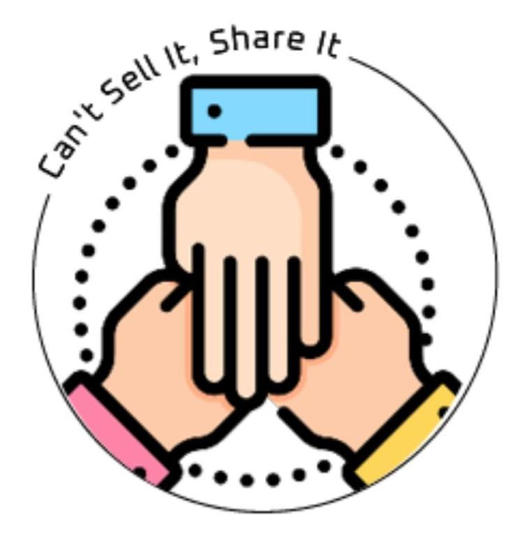

<header class="toolbar d-flex-column p-10" *transloco="let t">
  <div class="upper d-flex align-center">
    
    <a class="ml-10" routerLink="">Yard Rent</a>
    <div class="d-flex-grow"></div>
    <dato-button
      class="mr-10"
      datoType="secondary"
      (click)="openLoginDialog('login')"
      >{{ t('login') }}</dato-button
    >
    <dato-button class="mr-10" (click)="openLoginDialog('sign-up')">{{
      t('sign-up')
    }}</dato-button>
    <dato-button class="mr-10" datoType="orange"
      >+ {{ t('post-something') }}</dato-button
    >
    <!--  <dato-icon datoIcon="shopping-cart"></dato-icon>-->
    <!--    <div class="cart d-flex align-center-end pointer" *datoSubscribe="itemsCount$ as itemsCount">-->
    <!--      <div class="items-count absolute" [ngClass]="{'single-digit': itemsCount < 10, 'triple-digit': itemsCount > 99}">{{itemsCount > 99 ? '99+' : itemsCount}}</div>-->
    <!--      <svg fill="orange" xmlns="http://www.w3.org/2000/svg" viewBox="0 0 24 24"><path d="M10 19.5c0 .829-.672 1.5-1.5 1.5s-1.5-.671-1.5-1.5c0-.828.672-1.5 1.5-1.5s1.5.672 1.5 1.5zm3.5-1.5c-.828 0-1.5.671-1.5 1.5s.672 1.5 1.5 1.5 1.5-.671 1.5-1.5c0-.828-.672-1.5-1.5-1.5zm6.305-15l-3.432 12h-10.428l-3.777-9h-2.168l4.615 11h13.239l3.474-12h1.929l.743-2h-4.195z"/></svg>-->
    <!--      <div class="title">{{ 'cart' | transloco }}</div>-->
    <!--    </div>-->
  </div>
  <div class="lower d-flex align-center">
    <dato-button datoType="none">
      <a routerLink="">{{ t('marketplace') }}</a>
    </dato-button>
    <dato-button datoType="none">
      <a routerLink="about">{{ t('about-us') }}</a>
    </dato-button>
    <dato-button datoType="none">
      <a routerLink="">{{ t('contact') }}</a>
    </dato-button>
    <dato-button datoType="none" [datoMenuTriggerFor]="gettingStarted">
      <div class="mr-3">{{ t('getting-started') }}</div>
      <!--      <dato-icon datoIcon="arrow-down"></dato-icon>-->
      <svg
        xmlns="http://www.w3.org/2000/svg"
        width="10px"
        height="17px"
        viewBox="0 0 10 6"
      >
        <path
          fill-rule="evenodd"
          d="M9.392.92a.513.513 0 0 0-.923-.348l-3.59 3.733L1.29.572a.515.515 0 0 0-.738.718l4 4.102a.513.513 0 0 0 .738 0l4-4.102a.513.513 0 0 0 .103-.37z"
        />
      </svg>
    </dato-button>
  </div>

  <dato-menu #gettingStarted="datoMenu" placement="bottom-center">
    <ng-template datoMenuContent>
      <button datoMenuItem>
        <a routerLink="">{{ t('how-to-post') }}</a>
      </button>
      <button datoMenuItem>
        <a routerLink="">{{ t('how-to-rent') }}</a>
      </button>
    </ng-template>
  </dato-menu>
</header>
